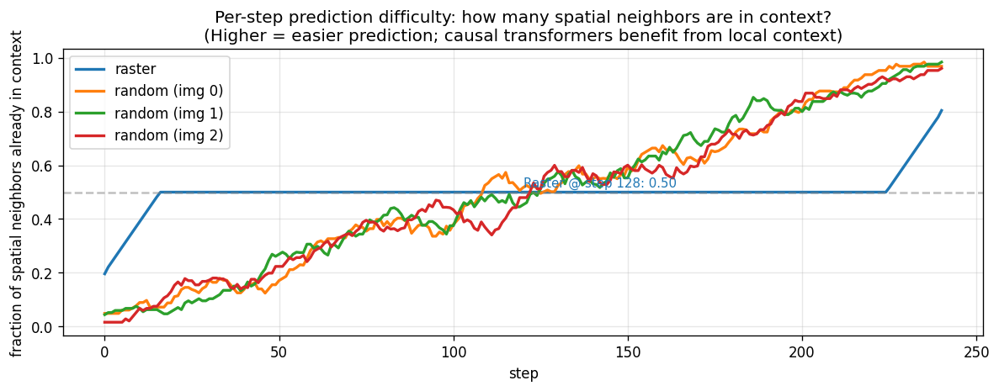
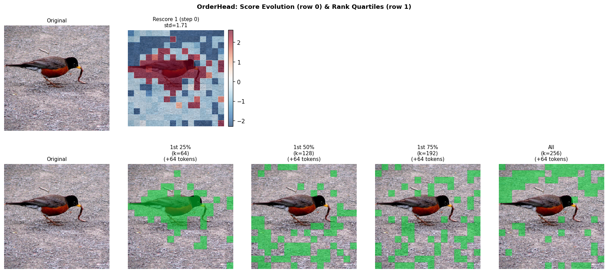

Contents
1. Model & Setup
All experiments use the LlamaGen GPT-B architecture with VQ-VAE tokenized ImageNet:
GPT-B
110M params, 24 layers, 12 heads, dim=768. Causal attention with 2D RoPE spatial encoding. Block size = 256 (16×16 grid). VQ vocab = 16,384.
Datasets
IN-100: ImageNet-100 subset, ~127K training images, 5K FID samples. IN-1K: Full ImageNet-1K with pretrained c2i_B_256.pt checkpoint.
Evaluation
FID and sFID computed against validation reference NPZ. Standard sampling: cfg_scale=2.0, temperature=1.0. OrderHead: semifast-8 rescoring, O(L²) per image.
2. Heuristic Orderings (Inference-Only)
The raster-trained GPT-B baseline is evaluated at inference with different spatial orderings,
using the sample_c2i_heuristic_ddp.py full-forward sampler with position_ids
for correct 2D RoPE per-token. No retraining — only the inference order changes.
ImageNet-100 (5K samples, cfg=2.0)
| Ordering | FID | sFID | Source |
|---|---|---|---|
| Raster (baseline) | 25.40 | 66.33 | samples_fid_baseline_in100 |
| Raster (heuristic sampler) | 25.63 | 66.15 | samples_fid_heuristic_raster_in100 |
| Zigzag | 71.69 | 82.08 | samples_fid_heuristic_zigzag_in100 |
| Diagonal | 117.58 | 93.89 | samples_fid_heuristic_diagonal_in100 |
| Stride-2 | 128.18 | 93.83 | samples_fid_heuristic_stride2_in100 |
| Spiral | 132.25 | 97.06 | samples_fid_heuristic_spiral_in100 |
| Column-major | 139.79 | 100.69 | samples_fid_heuristic_col_major_in100 |
| Center-spiral | 153.53 | 111.03 | samples_fid_heuristic_center_spiral_in100 |
| Reverse | 156.18 | 109.45 | samples_fid_heuristic_reverse_in100 |
| Random (seed=0) | 173.08 | 119.23 | samples_fid_heuristic_random0_in100 |
Raster baseline from standard KV-cache sampler (sample_c2i_ddp.py); all others from O(L²) heuristic sampler. The ~0.2 FID difference between the two raster results is due to sampling variance from the different samplers.
ImageNet-1K (5K samples, cfg=2.0, pretrained c2i_B_256.pt)
| Ordering | FID | sFID | Source |
|---|---|---|---|
| Raster | 5.32 | 7.46 | samples_fid_heuristic_raster_1k |
| Stride-2 | 119.62 | 45.38 | samples_fid_heuristic_stride2_1k |
| Center-spiral | 132.08 | 53.35 | samples_fid_heuristic_center_spiral_1k |
| Random (seed=0) | 151.23 | 66.11 | samples_fid_heuristic_random0_1k |
| Reverse | 154.35 | 68.76 | samples_fid_heuristic_reverse_1k |

Spatial neighbor coverage comparison. At step 32, raster order has 34.8% of spatial neighbors already generated; random order has only 5-6%. This explains why raster is far superior for causal AR — more context from immediate neighbors.
Takeaway: The raster-trained GPT is tightly coupled to raster context patterns. ANY deviation at inference degrades FID by 3x-7x. The 2D RoPE correctly encodes spatial position, but the causal attention pattern (which positions appear in the left-context) is fundamentally different.
3. Trained Orderings (From Scratch, IN-100)
Each model is trained from scratch on IN-100 with a fixed ordering (300 epochs, batch=256, lr=1e-4, same hyperparameters). FID evaluated with matching ordering at inference using the heuristic sampler.
| Training Order | FID | sFID | Source |
|---|---|---|---|
| Full raster retrain (fine-tuned from pretrained) | 17.57 | 67.18 | samples_fid_raster_ft_full_in100 |
| Diagonal | 24.97 | 65.99 | samples_fid_train_diagonal_in100 |
| Raster (original checkpoint) | 25.40 | 66.33 | samples_fid_baseline_in100 |
| Column-major | 25.95 | 66.26 | samples_fid_train_col_major_in100 |
| Zigzag | 26.35 | 66.18 | samples_fid_train_zigzag_in100 |
| Spiral | 30.94 | 66.42 | samples_fid_train_spiral_in100 |
| Random (one fixed permutation) | 44.74 | 66.78 | samples_fid_train_random_fixed_in100 |
Partial Fine-Tuning (raster order, from pretrained c2i_B_256.pt)
| Layers Fine-Tuned | FID | sFID | Source |
|---|---|---|---|
| All layers | 17.57 | 67.18 | samples_fid_raster_ft_full_in100 |
| Last 4 blocks | 58.68 | 67.64 | samples_fid_raster_ft_partial4_in100 |
| Last 2 blocks | 92.69 | 70.41 | samples_fid_raster_ft_partial2_in100 |
| Last 1 block | 98.62 | 71.92 | samples_fid_raster_ft_partial1_in100 |
Takeaway: When trained with a specific ordering, most fixed orderings achieve FID comparable to raster (24.97–26.35). The ordering itself matters less than training/inference consistency. Random (fixed) is worse (44.74) because the model cannot learn structured context patterns. Diagonal is best (24.97), slightly beating raster (25.40).
4. Random-Order Training (v1, No Fixes)
First attempt at MAR-style random ordering in LlamaGen: every training step samples a new random
permutation per image. No target-aware positional embedding, no annealing. Uses train_c2i_random_order.py
(before RAR fixes). Trained 300 epochs on IN-100.
| Inference Order | FID | sFID | Source |
|---|---|---|---|
| Raster | 159.41 | 115.89 | samples_fid_randtrain_in100_raster (job 6474613) |
| Random (seed=0) | 163.98 | 121.23 | samples_fid_randtrain_in100_random0 (job 6474613) |
Root cause analysis: Two critical missing components identified by comparing with the RAR paper (arXiv 2411.00776): (1) No target-aware positional embedding — the model cannot distinguish permutations that share a prefix but differ in the next token (ambiguous target problem). (2) No annealing to raster — raster inference is OOD for a purely random-trained model. Training loss plateaued at 8.45 (vs 6.30 for raster baseline). Generated images show realistic textures but no object structure.
5. RAR: Random Ordering with Annealing + Target-Aware Embed
After identifying the two missing components from the RAR paper, we implemented:
- Target-aware positional embedding (ta_pos_table): Learnable
nn.Embedding(256, 768)where token at step t receives the embedding ofperms[t+1](the next token's spatial position). Zero-initialized so it starts as a no-op. Resolves the ambiguous target problem. - Annealing schedule: Epochs 0–200: 100% random permutations. Epochs 200–300: linear decay to raster. Epochs 300–400: 100% raster. ta_embed set to None during raster phase to match inference.
Why Does RAR Improve Over Raster?
The RAR curriculum (random → anneal → raster) acts as a form of data augmentation in sequence space. During the random phase, the model sees every possible spatial context pattern — not just the left-context of raster. This is analogous to how image augmentation (random crops, flips) prevents overfitting to fixed spatial structure. When the model anneals back to raster order, it retains knowledge of arbitrary spatial relationships while specializing for raster inference.
Concretely, during the random phase the model must learn to predict any token given any subset of previously generated tokens. This forces the attention layers to develop more general spatial reasoning rather than relying on the left-context shortcut that raster training reinforces. When annealed back to raster, these more robust representations translate to better generation quality.
RAR Training Details
Three training phases over 400 epochs:
- Epochs 0–200 (Random phase): Every training step draws a fresh random permutation per image.
ta_embedprovides the next-token spatial position. Loss ~8.0 (higher than raster ~6.8 because random context is harder). - Epochs 200–300 (Annealing phase):
random_ratiolinearly decays from 1.0 to 0.0. The model gradually transitions from random to raster ordering.ta_embedautomatically disabled when ratio reaches 0. - Epochs 300–400 (Raster phase): Pure raster training, identical to standard baseline. Loss converges to ~7.1 (slightly above baseline due to regularization effect).
IN-100 Results (5K samples, cfg=2.0)
| Model | Inference | FID | sFID | Precision | Recall |
|---|---|---|---|---|---|
| Raster baseline (original ckpt) | Raster | 25.40 | 66.33 | — | — |
| Raster retrain (300ep finetune) | Raster | 17.57 | 67.18 | — | — |
| RAR (400ep from scratch) | Raster | 18.94 | 66.25 | 0.691 | 0.545 |
| RAR (400ep from scratch) | Random0 | 176.04 | 123.49 | 0.083 | 0.067 |
| Pure random AR (300ep, no anneal) | Raster | 151.10 | 110.44 | 0.066 | 0.108 |
| Pure random AR (300ep, no anneal) | Random0 | 165.00 | 115.81 | 0.054 | 0.099 |
| Random-order v1 (no ta_embed) | Raster | 159.41 | 115.89 | — | — |
RAR raster FID = 18.94 — better than both raster baselines. The RAR curriculum (random→anneal→raster) improves over the original raster checkpoint (25.40) by 25% and is competitive with the raster retrain (17.57) despite being trained from scratch for 400 epochs vs the retrain's 300 epoch finetune from a pretrained model. This is a free improvement: the final model infers in standard raster order with no extra cost.
Interpretation of Results
RAR raster inference works, random does not
After annealing, the model fully commits to raster: random0 inference gives FID=176 (catastrophic). The annealing successfully transitions the model from order-agnostic to raster-specialized, but it's a one-way trip — the model is NOT order-agnostic at epoch 400.
Pure random AR is a dead end
Without annealing, causal AR with random permutations (FID=151/165) cannot produce coherent images. Unlike MAR's bidirectional attention, causal attention means each token only sees its left-context — random orderings create inconsistent context patterns that the model cannot resolve. The ta_embed helps (FID=151 vs v1's 159) but cannot overcome the fundamental causal attention limitation.
The RAR epoch-200 checkpoint as an order-agnostic backbone
At epoch 200, the model has trained for 100K steps with random orderings and has not yet begun annealing. This checkpoint is a candidate order-agnostic backbone for OrderHead — it can handle arbitrary orderings, unlike the raster-trained GPT. The key question is whether an OH attached to this backbone can find an ordering that generates better images than raster. Planned
IN-1K RAR From Scratch
To match the IN-100 experiment exactly, we train RAR on IN-1K from scratch with the same 400-epoch schedule (200 random → 100 anneal → 100 raster). The official LlamaGen baseline was trained for 300 epochs raster (FID=5.32). RAR uses 400 epochs total (33% more compute), which is the same ratio as IN-100.
| Experiment | Config | Status | Baseline FID |
|---|---|---|---|
| RAR from scratch IN-1K | 400 epochs, anneal 200→300, ~2M steps | Running job 6643088 | 5.32 (raster, 300ep) |
Estimated ~50 hours on 4× H100. Key question: does the RAR regularization benefit scale from IN-100 to IN-1K?
6. OrderHead Experiments
Architecture
OrderHead: 4-layer ViT, hidden_dim=256, 3.46M params. ScoredOrdering with binary STE (k=64). ViT oracle: ViT-B trained on VQ codebook embeddings with PatchDrop (val@25=66.3%).
Progressive Generation Visualization

Progressive token generation guided by OrderHead (Phase 1, 48K steps). Each row shows a different image being generated step-by-step. The OrderHead selects which spatial positions to generate first based on oracle-trained importance scores. Notice the model tends to generate object-centric tokens early (center of images), but the causal attention structure means these tokens are predicted with minimal context.
Phase 1: Frozen GPT, Oracle MSE Only
GPT-B frozen at raster baseline checkpoint (0145000.pt). OrderHead trained via
MSE(sigmoid(scores), vit_importance.detach()). 48K steps.
| Experiment | FID | sFID | Source |
|---|---|---|---|
| Phase 1 (oracle, semifast-8) | 155.58 | 113.12 | Slurm job 6221286 |
The frozen GPT was never exposed to non-raster orderings during training. At inference, the OH-selected ordering is completely OOD for the GPT body, producing FID worse than random heuristic ordering.
Phase 2: Joint GPT + OrderHead Training
Two variants tested, both starting from raster-trained GPT-B:
| Experiment | FID | sFID | CE Loss | Source |
|---|---|---|---|---|
| Phase 2 (from Phase 1 checkpoint, STE + oracle) | 146.51 | 112.59 | ~7.50 | Slurm job 6217262 |
| Phase 2 direct (from raster GPT, STE + oracle) | 140.89 | 105.31 | ~7.42 | Slurm job 6217263 |
Why Phase 2 failed: The raster-trained GPT's CE loss only dropped from ~7.6 to ~7.4 over 48K joint training steps (vs baseline 6.8). The GPT body cannot quickly adapt to non-raster orderings. Joint training would need much longer (hundreds of epochs) to close this gap, effectively retraining the entire model.
OH STE Finetune (Completed)
GPT + OrderHead jointly trained from raster checkpoint with binary STE (k=64), no oracle supervision. CE loss alone drives OrderHead via STE gradient. 300 epochs (~148K steps).
| Metric | Start | End | Diagnosis |
|---|---|---|---|
| CE loss | 8.55 | 7.33 | Still far from baseline 6.8 |
| score_std | 0.6 | 14–17 | Exploded — scores drift unboundedly |
| FID | Evaluating | job 6642558 | |
Post-mortem: score_std=14-17 despite grad clipping at max_grad_norm=1.0.
Root cause: scores are internally normalized for ranking (scores_to_mask), so score magnitude
is unconstrained — only relative ranking matters. Over 148K steps, small clipped gradients accumulate,
pushing scores to extreme values. The oh_lr_scale=3.0 (3× GPT LR) accelerated this drift.
OH From-Scratch Curriculum (Completed)
Three-phase curriculum: (A) raster warmup, (B) gradual OH introduction, (C) full OH. ~136K steps to Phase C completion.
| Metric | Phase A | Phase C End | Diagnosis |
|---|---|---|---|
| CE loss | 8.20 | 7.67 | Worse than both raster (6.8) and STE finetune (7.33) |
| score_std | — | 0.46 | Collapsed — near-uniform scores |
| align_loss | 0.02 | 0.021 | Not improving |
| FID | Evaluating | job 6642559 | |
Post-mortem: score_std=0.46 means the OH has collapsed to near-uniform scores,
effectively producing a random ordering. The curriculum was supposed to prevent this, but from-scratch training
encounters the chicken-and-egg problem: the GPT body never sees non-raster orderings during Phase A,
so when OH activates in Phase B, both models are mismatched.
Fix: Short Finetune with Score Regularization
Based on the failure analysis, we identified three fixes and submitted a new 20-epoch experiment:
- Short training (20 epochs ≈ 10K steps): Don't let GPT drift far from raster competence.
- Separate OH grad clipping (
--oh-max-grad-norm 0.1): 10× tighter clipping for OH params specifically, preventing score explosion. - Score regularization (
--oh-score-reg 0.01): L2 penalty on score magnitudes:0.01 * scores.pow(2).mean(). Prevents unbounded score drift. - Conservative LR (
--oh-lr-scale 1.0): Same LR as GPT instead of 3×.
| Experiment | Config | Status |
|---|---|---|
| OH short finetune (20ep) | oh_grad_clip=0.1, score_reg=0.01, lr_scale=1.0 | Running job 6642557 |
Expected: CE stays near 6.8, score_std stays in 1–3 range. If successful, provides a controlled test of whether OH can improve upon raster within the raster-trained body's competence range.
7. Discussion: How RAR Actually Works
The most surprising result in this project is that the RAR curriculum — which trains with random orderings and then anneals back to raster — produces a better raster-inference model than pure raster training. The final model generates in standard raster order at zero additional cost. Here's our analysis of why this works:
Regularization via sequence augmentation
Training with random permutations is a form of data augmentation in sequence space. Just as image augmentation (crops, flips, color jitter) prevents overfitting to fixed spatial patterns, random orderings prevent the model from overfitting to the specific context patterns of raster scan. The model must learn general spatial relationships rather than relying on the fact that, say, position (3, 5) always appears after position (3, 4).
Stronger attention representations
During the random phase, each attention head must learn to predict tokens given arbitrary subsets of spatial context. This forces development of more diverse attention patterns — some heads become spatial proximity detectors, others become texture or color consistency checkers. In pure raster training, attention heads can specialize narrowly for left-context patterns, which is sufficient but not optimal.
Evidence: the RAR model's final raster-phase loss (7.11) is slightly higher than the raster baseline (6.8), yet its FID is better (18.94 vs 25.40). This suggests the RAR model has learned representations that generalize better despite the marginal increase in per-token prediction loss.
Analogy to dropout and noise injection
Random orderings can be viewed as a structured form of context dropout: at each training step, the available context for each token is a random subset of spatial positions rather than the fixed left-context of raster. Similar to how dropout prevents co-adaptation of neurons, random orderings prevent co-adaptation between specific context positions and their predictions.
The annealing is critical
Pure random AR (no annealing) fails catastrophically: FID=151. The random phase alone produces a model that can handle any ordering but excels at none. The annealing phase serves as fine-tuning: it specializes the model for raster inference while retaining the robust representations learned during the random phase. The 100-epoch raster phase (epochs 300–400) further cements this specialization.
This is analogous to the pre-training → fine-tuning paradigm in NLP: random-order training is a form of pre-training that builds general sequence understanding, and raster annealing is fine-tuning for the specific task.
Open questions
- Does the benefit scale with model size (GPT-L, GPT-XL)?
- Does RAR finetuning improve a model already trained for 300 epochs with raster? (IN-1K experiment running)
- What is the optimal random:anneal:raster epoch ratio?
- Can the epoch-200 order-agnostic checkpoint serve as a backbone for OrderHead?
- Does the benefit persist at IN-1K scale, or is it an IN-100 artifact?
8. Critical Bugs Found & Fixed
Bug 1: target_aware_embed active during raster phase
ta_embed was always computed and passed to GPT, even during the pure-raster phase (epochs 300-400). Standard inference (sample_c2i_ddp.py) never provides ta_embed, causing a train/inference mismatch. Fix: Set ta_embed = None when random_ratio == 0.
Bug 2: Random-order training v1 missing RAR components
First random-order attempt had no target-aware positional embedding and no annealing schedule. Both are critical components from the RAR paper (arXiv 2411.00776). Without them, loss plateaus at 8.45 and generated images lack object structure. Fix: Implemented full RAR pipeline with ta_pos_table and epoch-based annealing.
Bug 3: Score alignment loss shape mismatch
In the from-scratch curriculum script, per_token_ce computation had mismatched batch dimensions (16384 vs 16320) due to incorrect target indexing with GPT's internal logit shift. Fix: Align targets with GPT's training-mode logit convention where logits[:, i] predicts z_indices[:, i].
Bug 4: saliency_attn oracle produces flat importance maps
CLS→patch attention with all 256 tokens visible produces near-uniform attention (~0.004/patch), giving OrderHead a meaningless regression target. score_std stays at 0.2-0.5 (collapsed). Fix: Switch to --classifier-mode oracle --cls-k 64 which uses cluster-based classification probability. score_std recovers to 1.0-1.6.